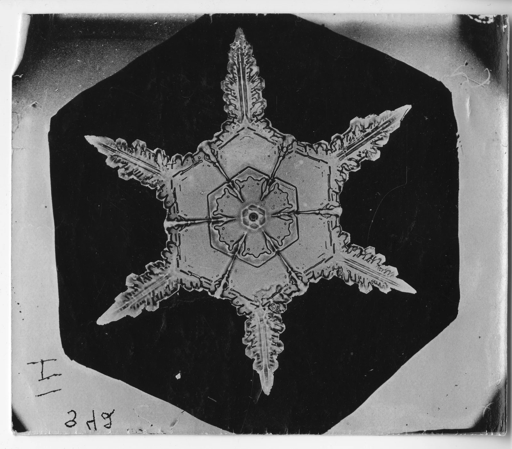

Six arms hold a fleeting architecture of ice.
Nested hexagons, radiating arms.
Read broad planes before serrated edges.
Almost achromatic: values do the work.
Dark ground makes pale grey glow.
Fine dark channels suggest depth.
The black field is not a proven shadow.
Design palette; not sampled from the original.
Albumen print, c. 1890.[1]
A camera and microscope reveal detail.[3]
Wilson Alwyn Bentley, from Vermont.
He photographed a snow crystal in 1885.[3]
Uneven edges. A scarred paper surface.
A fleeting form given time to endure.
Try a subject at 75% of layout width.
Keep text clear of every tip.
60% paper + 30% charcoal + 10% grey.
Build value hierarchy before decoration.
Suggested: #F1EFE8 / #181A1B / #B8BABC
Design exercise, not original colour measurements.
Wilson Alwyn Bentley · c. 1890
Smithsonian Institution Archives
Record Unit 31 · SIA2008-1394
Image: public domain (CC0), as marked by the institution.
Rights remain with holders where applicable.
Independent visual commentary.